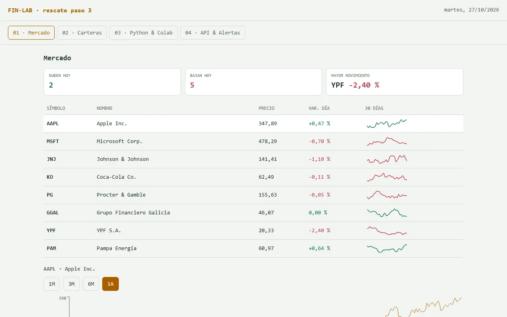

PASO 3 · MERCADO
Mercado: tarjetas, tabla y gráfico
Los datos, a la vista.
Una idea nueva: La variación del día compara el cierre (último precio de la rueda) de hoy con el de ayer. Ejemplo: de 100 a 102 es +2 %; de 100 a 98, −2 %.
¿Sin el paso 2? ⬇ BAJAR EL PUNTO DE PARTIDA (PASO 2)
Qué van a lograr
SUBEN HOY5
BAJAN HOY3
MAYOR MOVIMIENTOPAM +2,33 %
| SÍMBOLO | NOMBRE | PRECIO | VAR. DÍA | 30 RUEDAS |
|---|---|---|---|---|
| AAPL | Apple Inc. | 308,43 | −0,74 % | Pampa Energía | 59,63 | +2,33 % |
1M3M6M1A
Valores de ejemplo: en su tabla serán otros.
Así va quedando
- Esqueleto (ya está)
- Datos (ya está)
- Mercado (este paso)
- Indicadores (todavía no)
- Carteras (todavía no)
- API (todavía no)
- Colab (todavía no)
- n8n (todavía no)
- #/guiado (todavía no)
- Clave (todavía no)
- Modelo (todavía no)
- Agente (todavía no)
- Consejo (todavía no)
- MCP (todavía no)

El prompt
PROMPT · PASO 3
Paso 3. En la pestaña "01 · Mercado" mostrá: - 3 tarjetas: activos que suben hoy, que bajan y el que más se movió (mayor %, suba o baje) - una tabla: símbolo, nombre, precio, variación % del día (verde si sube, rojo si baja) y sparkline de las últimas 30 ruedas - al hacer clic en una fila, gráfico de línea (Recharts) con los 252 cierres y rangos 1M / 3M / 6M / 1A, con fecha y precio al pasar el mouse Variación del día = (cierre de hoy / cierre de ayer − 1) × 100. Dejá TICKERS y simulateSeries como window.TICKERS y window.simulateSeries. [pegar el archivo completo]
Qué hacer
- Peguen el prompt y, debajo, el archivo del paso 2 (Ctrl + A, Ctrl + C), y envíen.
- Guarden la respuesta como finlab.html, ábranla y prueben dos filas y los botones de rango.
- Comprueben abajo. Si está todo bien, guarden finlab-v3.html.
Cómo comprobar
¿Chrome no deja pegar? Escriban allow pasting, Enter, y peguen de nuevo.
- Variación: en la consola, simulateSeries(TICKERS[0]).slice(-2). Calculen (hoy ÷ ayer − 1) × 100: tiene que coincidir con la tabla.
- Las tarjetas cierran: suben + bajan (+ sin cambio) = cantidad de activos.
- El rango 1M muestra unas 21 ruedas (días con mercado abierto), no 30 días corridos.
Si algo falla
Tres intentos y nada: ⬇ BAJAR LA VERSIÓN DE RESCATE
- “Recharts is not defined” o no hay gráfico: pídanle que cargue React y PropTypes antes de la librería de gráficos.
- La variación no coincide: “La variación de AAPL en la tabla da X pero con los cierres A y B me da Y. Revisá la función y mostrame la cuenta.”